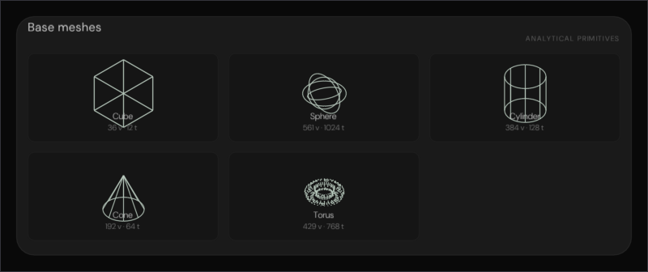
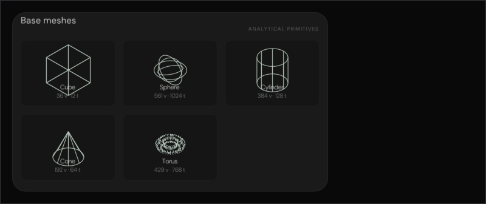
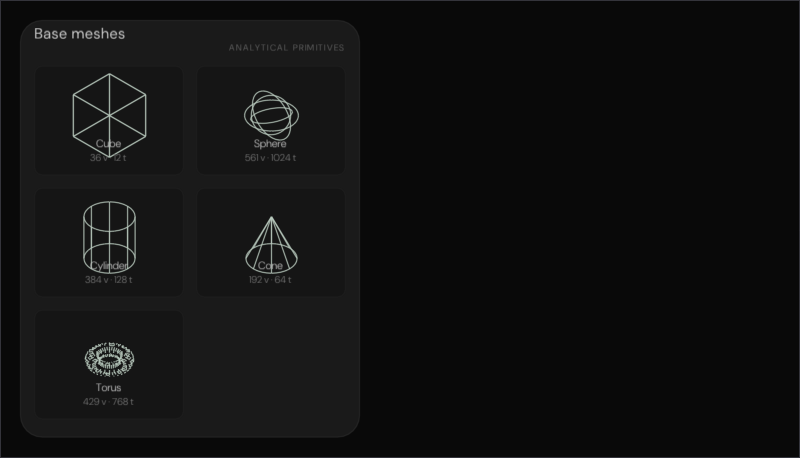
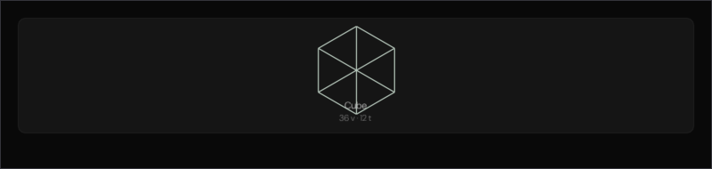
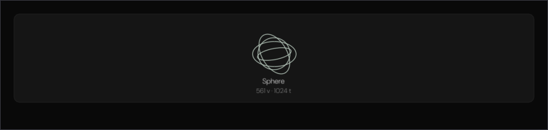
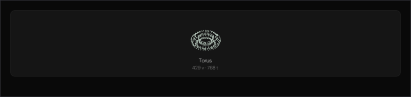

Every pixel below came out of a real ImGui draw list, rasterised on the CPU and written to PNG by
Exhibits/Workbench/BaseMeshes/NativeBaseMeshes.cpp. Nothing here is a mock-up.
The catalogue is the browser's own Editor.jsx:52 — five entries, each with an
editor-* icon and an expected tessellation out of
Engine/Editor/ConstructWorld.cpp. Before this port nothing in Engine/
carried that icon set or those counts together with the card chrome.
Screenshots cannot prove a mesh is not a decorative replacement. The numbers can. The proof pins the
native Build() topology and checks it byte-for-byte, then renders the same vertices
isometrically so the thumbnails are recognisable against the browser's own SVGs.
| Mesh | Icon | Topology | Note |
|---|---|---|---|
| Cube | editor-cube | 36 v · 12 t | 6 faces · 2 tris each |
| Sphere | editor-sphere | 561 v · 1024 t | 32 × 16 · 33×17 verts |
| Cylinder | editor-cylinder | 384 v · 128 t | 32 sides · caps |
| Cone | editor-cone | 192 v · 64 t | 32 sides · 1 cap |
| Torus | editor-torus | 429 v · 768 t | 32×12 · 33×13 verts · R 0.35 r 0.15 |
Combined: 1602 vertices, 1996 triangles. The card chrome behind them is the same
.generic-card the fracture card uses — 22 px radius, 14 px / 18 px padding — so the
wrapping grid and the collapsed block flow are checked, not just the pictures.
Executed, not illustrated

Wide enough for three across: 18 px + 19.53 px + 8 px + 2×110 px + 12 px + 18 px = 304.53 px tall.

The same two rows, each thumbnail a little narrower. The wireframes are a CPU isometric projection of the actual ConstructWorld vertices.

At 340 px the grid collapses to two columns and three rows: 18 px + 19.53 px + 8 px + 3×110 px + 2×12 px + 18 px = 426.53 px tall.

12 edges, 8 vertices projected at 30°. The count is the native Build() count, not a decorative cube.

Three great circles plus the 32×16 UV lattice — 33×17 vertices, 32×16×2 triangles.

32×12 quads, 33×13 vertices, R 0.35 plus r 0.15 — the only primitive that reuses a vertex row.